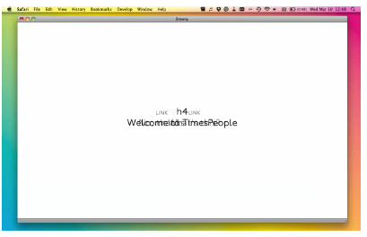
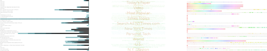
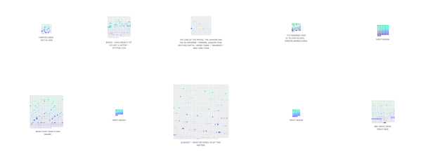
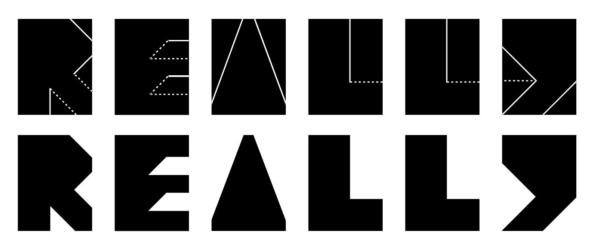

Let me tell you about my thesis
marcos ojeda
There is a part of me that often asks: “at this moment, what are you supposed to be doing?” and in most cases i give it the most honest response that i have at my disposal. Right now for instance, I am telling you about my thesis.
So what was my thesis about? It was basically about answering that prompt over and over again. Oh, i couched it in a more serious language at the time: “the use of procedural abstraction to produce a working model for a graphic design practice.” Or something like that.
But basically, if you’ve developed one of these abstractions, you know that you’re always self-aware of what you’re doing. This translates to analyzing patterns of behavior. So the second time you find yourself setting a heading underlined all caps italics you’re thinking about what this means for lesser headings, or how general of an action this could be.
This is known in the computer science world as bottom-up design, by which i mean: you develop the system as you go along. The complement to bottom-up design is top-down design, which basically means that you develop the system and then implement it. In both cases, there’s some language that you’re trying to express. In the bottom-up case, you’re developing the rules (and the language) each time you use it, so it changes, develops and matures over time. In the top-down case, you specify some rules and produce something given that system. And so, with this process you always produce two things: a process and a finished product.
Interaction
In the fall of 2008, I began a project which involved using a screen reader, a program used by sightless people that vocalizes a computer’s interface or content on the screen. I wanted to understand the screen reading experience and then find out what sort of visual forms that would inspire. This form-driven exploration, lacking any particular driving focus, is a bottom-up exploration of the visual possibilities of the project. As such, much of this project is devoted to developing a way to visually articulate this experience.
When designing web pages, we are constantly told to develop them so that they are as accessible as possible. Without experiencing a screen reader, it’s hard to really know what this means. How could i convey the screen reading experience to sighted people?
I didn’t want to show or playback a VoiceOver session, so instead, I began trying to convey the parts of sightless web browsing i was most fascinated with:
- the flattening of content and
- the inability to perceive the organizational structure of a webpage.
This first produced a web application that harvested a brief sighted web browsing session and then flattened the resultant webpages and forced the user to browse it using only the left and right arrows of the keyboard. As was the case with the screen reader, only one piece of content could occupy the screen at a time, although if you navigated quickly enough, afterimages of content would remain.

Part of the process that yielded the visual screen reader was piecing apart the experience of using the auditory one. It was this pattern recognition, this bottom-up view of the application that helped me develop my visual reader. From the experience of being lost in a webpage came the lack of apparent navigation. From the incessant repetition of the user interface came the prolonged visual blinking once you reached the end of page. These are 1:1 relationships in some way with the auditory experience, but they are more heavily influenced by the parts of the interface i became more aware of rather than parroting the interface altogether.
The next stage of this was the development of a way of somewhat objectively analyzing this experience. Because it is difficult, if not inconvenient, to navigate all pages this way, i began looking for a visual form to express the relative scarcity of content on webpages i was visiting.

This yielded a way of thinking about content: in particular, i began to rescale the spoken length of any content with the longest piece of content on a page. This is actually a very forgiving metric, but it exposes vast deserts of content in webpages. Whole sections that are occupied with single links that waste your valuable time (recall, there is no easy way to visually inspect which part of the page you care about when you have no way of seeing what is on the page.)

The graphics are then reminders of how a webpage may be perceived. Their appearance is a quick indication of both how vast a page may be and also where the content is and how it is organized.
The development of both these component projects: the visual screen reader and the content density graphics, stemmed from a mostly bottom-up exploration of a very vague top-down idea. While the finished product remains the density graphics, they represent a condensed form of the interactive screen reader. Both are presented at the same time because the evolution of one is critical to the development of the other.
Reuse
Reuse is a typeface that i developed in the spring of 2009. It was developed because i wanted to find a way for designers to address the “green issue.” How can a practice that typically generates a vast quantity of waste paper be green? My solution was the creation of a typeface that could be formed from the left over 8.5x11” paper.
The typeface is unicase and it is, by design, also monospace. It is designed to be fast and easy to physically implement. When set by computer, the uppercase provides instructions for how to create the lowercase.

So there are both products: the process and the the product. Cleverly (or not, depending on how you feel), the process is encapsulated in the uppercase and the product is manifest in the lowercase. That is, the system is sort of in your face. How was this made? see the uppercase. What will this look like? see the lowercase.
Again, here I asked myself the question: what is it you’re supposed to be doing?
And the answer revealed itself in some dialogue: how can you make reusing paper cool (or cooler)? Find a way to make it serve a second purpose. Ok, so if it’s going to be a font, then “so what?” … Well, you need two things: instructions and a finished product. Wouldn’t it be cool if you could use the typeface for prototyping what your design will look like. But how do you explain how to make the letters? A book? umm…. Oh yeah, how about making it unicase and reserving the instructions for the uppercase.
Or something like that.
After I had decided upon the top-down constraint (everything starts with an 8.5x11” piece of paper), I began forming the letters. But as I was making the letters, i started to ask myself what i liked about some letters that i didn’t like about others. So the bottom-up process evolved what worked and what didn’t: i decided upon 45 and 90 degree angles as the only two allowed. Then i applied a new constraint: a fold was preferred to a tear.
In this way the two processes met in the middle and each influenced the design of the other. The result, the finished typeface, is as much a product of an overarching vision as it is the result of iteratively developing individual letterforms. The two arrive together, so that at some point it becomes hard to separate the two: the process is affected by the practice and the practice is driven by the process.
I want to suggest that most design is neither exclusively bottom-up or entirely top-down. The extremes exist: But if you’re lucky, the thing that you create will be an intersection of the two.
closing
These two projects are but a fraction of my thesis work, but they have have both been influenced by the question of what it is that i am doing and how it is that i can best explain that. They build on the idea that at each stage of development, you aggregate visible patterns and then build with those.
This process yields work which is expressive of my own understanding of these topics and my hope that you will gain something from seeing them as i do.